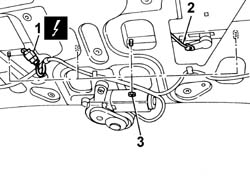
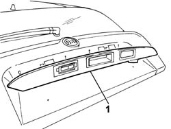

7015B30 exterior handle or block support - r+r with panel/protection removed
- Path
- Procedures > 70 FITTINGS > 7015 TAILGATE/ > 7015B tailgate locking/opening devices > 7015B30 exterior handle or block support - r+r with panel/protection removed
- Kind
- repair procedure (removal / refitting; the operation number is the code)
- Applies to
- all engines; all production periods
- Interactive page
- https://sloeber94.github.io/elrnDB-fPnd/en/#/2753127
Applies to: all engines; all production periods
 Removing
Removing
 Refitting
RefittingDisconnect the battery negative terminal.
1. Disconnect the electrical connection.
 | Name | Connector |
|---|---|---|
1 | Tailgate coupling | D85 |
2. Rotate the clip and release the rod from the lock to the barrel.
3. Unscrew the retaining nuts.

Applies to: all engines; all production periods
1. Remove the exterior handle/lock barrel support.

Applies to: all engines; all production periods
Refitting
RemovingPlace the exterior handle/lock barrel support in position and tighten the fixing nuts.
Attach the rod from the lock to the barrel and secure it using the special clip.
Connect the electrical connection.
| Name | Connector |
|---|---|---|
- | Tailgate coupling | D85 |
Connect the battery negative terminal.